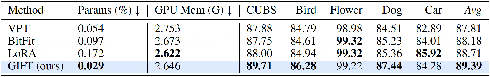
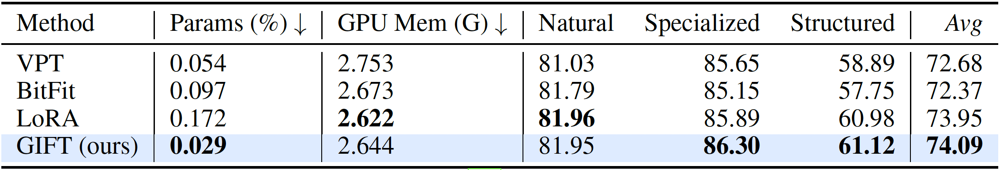

Visual Recognition
FGVC Benchmark

Results on the finegrained visual classification (FGVC) tasks. The number of trainable parameters are reported without the classification head which has the same number of parameters for all the methods. The GPU memory usage is reported via torch.cuda.max_memory_allocated() during training with the batch size 32.

When GIFT is applied to fine-tune the projection layers in the multi-head self-attention modules of Vision Tranformers on image classification tasks, the output of the first linear layer \((C^l_{d_{out}\times r}=\omega^l_{d_{out}\times d_{in}}\cdot \phi_{d_{in}\times r})\) plays the role of a \(r\)-way segmentation/token-clustering head. This localization ability emerges as a by-product without any direct supervision for the segmentation maps, using the standard cross-entropy loss during fine-tuning. The maps can form on objects/parts in images, even handling occlusions (e.g., the bird body in the fifth column), and finding relevant objects (full bird, head in third column) even if the object occupies a small part of the image.

Meaningful visual segmentation/token-clustering maps are formed. We show examples of head, wings and legs of birds in the top-left, examples of flower petals in the top-right, examples of head, ears and legs of dogs in the bottom-left, and examples of tires, windshield and bumper of cars in the bottom-right. We can see global (object level) as well as part-level maps.
VTAB-1k Benchmark
